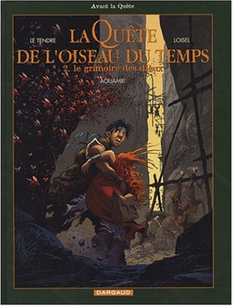

la quête de l'oiseau du temps, avant la quête, tome 2 : le grimoire des dieuxrégis loisel, serge le tendre   la quête de l'oiseau du temps, avant la quête, tome 3 : la voie du rigerégis loisel, serge le tendre la quête de l'oiseau du temps, avant la quête, tome 3 : la voie du rigerégis loisel, serge le tendre  la quête de l'oiseau du temps, avant la quête, tome 4 - le chevalier bragonrégis loisel, serge le tendre la quête de l'oiseau du temps, avant la quête, tome 4 - le chevalier bragonrégis loisel, serge le tendre la quête de l'oiseau du temps, tome 1 : la conque de ramorrégis loisel, serge le tendre De l'héroïc fantasy pour ceux qui n'aiment pas l'héroïc fantasy. On y trouve des héros, mais ils sont bien vieux ou bien malhabiles au maniement de l'épée. D'ailleurs, les seuls véritables bretteurs de l'histoire finiront tous très mal. On y trouve aussi une très jolie fille, mais elle se révèlera n'être qu'une illusion. Pourtant, en apparence, les lois du genre sont respectées. Un chevalier, Bragon, part à la recherche de l'Oiseau du temps, seule créature capable d'empêcher Ramos le dieu maudit de quitter sa prison... Tout le talent de Le Tendre au scénario et de Loisel au dessin, est de respecter somptueusement l'imagerie du genre en en détournant le sens. Devant le succès de La Quête (4 volumes ou intégrale), les auteurs ont lancé une nouvelle série racontant la jeunesse des héros. Avec la promesse de retrouver un jour la belle Pelisse, évaporée à la fin du premier cycle. Lidwine (auteur du Dernier loup d'Oz chez Delcourt )a dessiné L'Ami Javin, premier tome du nouveau cycle. —Jean-Pierre Fuéri  la quête de l'oiseau du temps, tome 2 : le temple de l'oublirégis loisel, serge le tendre la quête de l'oiseau du temps, tome 2 : le temple de l'oublirégis loisel, serge le tendre De l'héroïc fantasy pour ceux qui n'aiment pas l'héroïc fantasy. On y trouve des héros, mais ils sont bien vieux ou bien malhabiles au maniement de l'épée. D'ailleurs, les seuls véritables bretteurs de l'histoire finiront tous très mal. On y trouve aussi une très jolie fille, mais elle se révèlera n'être qu'une illusion. Pourtant, en apparence, les lois du genre sont respectées. Un chevalier, Bragon, part à la recherche de l'Oiseau du temps, seule créature capable d'empêcher Ramos le dieu maudit de quitter sa prison... Tout le talent de Le Tendre au scénario et de Loisel au dessin, est de respecter somptueusement l'imagerie du genre en en détournant le sens. Devant le succès de La Quête (4 volumes ou intégrale), les auteurs ont lancé une nouvelle série racontant la jeunesse des héros. Avec la promesse de retrouver un jour la belle Pelisse, évaporée à la fin du premier cycle. Lidwine (auteur du Dernier loup d'Oz chez Delcourt )a dessiné L'Ami Javin, premier tome du nouveau cycle. —Jean-Pierre Fuéri  la quête de l'oiseau du temps, tome 3 : le rigerégis loisel, serge le tendre la quête de l'oiseau du temps, tome 3 : le rigerégis loisel, serge le tendre De l'héroïc fantasy pour ceux qui n'aiment pas l'héroïc fantasy. On y trouve des héros, mais ils sont bien vieux ou bien malhabiles au maniement de l'épée. D'ailleurs, les seuls véritables bretteurs de l'histoire finiront tous très mal. On y trouve aussi une très jolie fille, mais elle se révèlera n'être qu'une illusion. Pourtant, en apparence, les lois du genre sont respectées. Un chevalier, Bragon, part à la recherche de l'Oiseau du temps, seule créature capable d'empêcher Ramos le dieu maudit de quitter sa prison... Tout le talent de Le Tendre au scénario et de Loisel au dessin, est de respecter somptueusement l'imagerie du genre en en détournant le sens. Devant le succès de La Quête (4 volumes ou intégrale), les auteurs ont lancé une nouvelle série racontant la jeunesse des héros. Avec la promesse de retrouver un jour la belle Pelisse, évaporée à la fin du premier cycle. Lidwine (auteur du Dernier loup d'Oz chez Delcourt )a dessiné L'Ami Javin, premier tome du nouveau cycle. —Jean-Pierre Fuéri  la quête de l'oiseau du temps, tome 4 : l'oeuf des ténèbresrégis loisel, serge le tendre la quête de l'oiseau du temps, tome 4 : l'oeuf des ténèbresrégis loisel, serge le tendre De l'héroïc fantasy pour ceux qui n'aiment pas l'héroïc fantasy. On y trouve des héros, mais ils sont bien vieux ou bien malhabiles au maniement de l'épée. D'ailleurs, les seuls véritables bretteurs de l'histoire finiront tous très mal. On y trouve aussi une très jolie fille, mais elle se révèlera n'être qu'une illusion. Pourtant, en apparence, les lois du genre sont respectées. Un chevalier, Bragon, part à la recherche de l'Oiseau du temps, seule créature capable d'empêcher Ramos le dieu maudit de quitter sa prison... Tout le talent de Le Tendre au scénario et de Loisel au dessin, est de respecter somptueusement l'imagerie du genre en en détournant le sens. Devant le succès de La Quête (4 volumes ou intégrale), les auteurs ont lancé une nouvelle série racontant la jeunesse des héros. Avec la promesse de retrouver un jour la belle Pelisse, évaporée à la fin du premier cycle. Lidwine (auteur du Dernier loup d'Oz chez Delcourt )a dessiné L'Ami Javin, premier tome du nouveau cycle. —Jean-Pierre Fuéri |


 Made with Delicious Library
Made with Delicious LibraryNancy, State zipflap congrotus delicious library Thomas, Julien